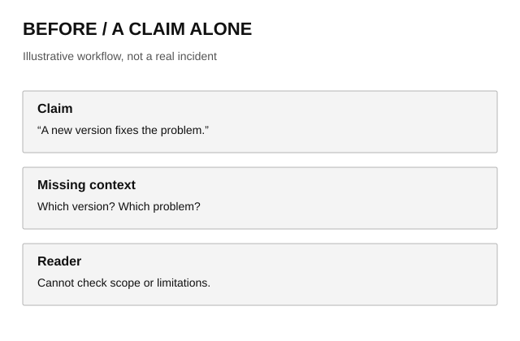
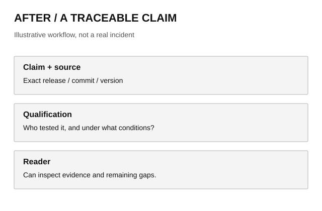

Evidence before confidence
How to read an AI investigation: follow a claim to its source, distinguish a report from a result, and understand what the evidence leaves open.
Start with the plain-English explanation ↓
Overview
A confident headline can hide several different things: a supplier's announcement, a repeatable experiment, an individual complaint, or a guess. Dekrov Insights uses explicit source labels and numbered references so readers can see which kind of support a claim has. The publishing contract documents those labels and the required editorial checks. [1]
This page explains that method and demonstrates the reading tools. It is an editorial guide, not an investigation into a new model, a retrospective verification of old articles, or a report of an experiment. The examples below are hypothetical and are labeled accordingly.
Technical Deep Dive
Separate provenance, observation and inference
Provenance means where information came from. An official release note is a primary source for what its author announced. It does not, by itself, prove that a fix works in every environment. An independent test can measure behavior in one configuration without establishing a universal result. A forum complaint can identify a question worth investigating without establishing how often the problem occurs.
For a practical claim such as “this version fixes a crash,” look for the affected version, exact code change, test conditions and remaining failures. When the cause is unknown, describe the observed symptom. When a patch is only proposed, do not call it shipped. That distinction is part of the authoring contract. [1]
When sources appear to disagree
The following is a hypothetical comparison, not a real incident or test result. A release note and a user report may both be accurate because they describe different systems. Read their scope before choosing a winner.
| Hypothetical source | What it says | What remains unknown |
|---|---|---|
| Project release note | One startup crash was patched. | Whether every startup crash has the same cause. |
| User discussion | A crash still occurs on another setup. | Whether its version, cause and configuration match the patch. |
| Follow-up investigation | Compare versions, logs and reproduction steps. | Until those checks exist, the disagreement is unresolved. |
Changing the wording cannot resolve a missing measurement. The conclusion should state the narrower supported finding and the next observation needed to distinguish competing explanations.
Publication is a separate check
The site's validator checks the catalog, local links, citation targets and article markup. Its optional network check reports whether sources can be reached. Neither operation verifies the meaning of a source, the fairness of a benchmark or reproduction rights. Those remain editorial responsibilities. The implementation is available for inspection. [2]
python scripts/validate_articles.py --links- Establish the claim. Identify what happened, when, and which version is involved.
- Inspect the evidence. Read primary material, compare independent observations and disclose contradictions.
- Explain and qualify. Write the technical analysis and a standalone explanation for a reader new to the subject.
- Verify publication. Check the page, catalog and exact-commit deployment before sharing the URL.
Visual Evidence: a claim with a trail
These original diagrams compare two ways of presenting a claim. They illustrate the editorial method; they are not photographs, screenshots or evidence of a real-world incident.






Enlarge an image to inspect it, or use its original-source link. In investigations, captions should identify the version, date, source and any crop or annotation. If permission to reproduce an image is unclear, the article should link to it instead. Missing imagery must not be replaced with a generated picture presented as documentary evidence. [1]
Explained Simply
Imagine a car company says it has fixed a problem. That is useful news, but you would still want to know which cars are affected, what was changed and whether the repair has been checked. News about AI tools deserves the same questions. A statement from the company tells us what it says. A test tells us what happened under the conditions of that test. They answer different questions.
A “source” is the original material behind a sentence: perhaps a company's announcement, a research paper or a user's report. The small numbers beside statements take you to those materials. Labels tell you who is speaking. “Official” means the project or company said it. “Independent” means someone outside that organization studied it. “Community” means it comes from a discussion. “Unconfirmed” means there is not enough evidence to treat it as established.
Suppose a company says an app no longer crashes, but someone says theirs still does. We should not immediately assume one side is lying. They might be using different versions or facing different problems. Until we can compare those details, the honest answer is that we do not know whether both reports concern the same fault.
For you, the practical step is to read the conclusion and check whether its limits apply to your situation before acting. If a change matters to your work, follow the source link and look for your version or setup. A picture can help explain something, but a neat diagram is not proof that it happened. Likewise, a link opening successfully only means the page is available; it does not make the page correct.
You do not need to learn programming to use this site. Start with this plain-English section, use the quick navigation to move to the conclusion or sources, and open the technical analysis only when you want the details. Older articles may not yet include this full explanation format.
Conclusion
A useful investigation makes its evidence inspectable and its limits visible. The publishing tools help authors connect claims, sources and images; they cannot decide whether an argument is sound. Readers should be able to distinguish a documented observation from a statement, an interpretation and an unresolved report.
The new article contract applies to new investigations. Older articles remain accessible with their original content and gain shared reading navigation, but their claims have not been re-researched as part of this platform upgrade. The authoring guide and validator are public so their exact scope can be checked. [1] [2]
Evidence & Sources
These are primary sources for this site's editorial contract and implementation, not independent evidence of a model's performance.
- OfficialDekrov Insights — Article Authoring GuidePublished November 10, 2026. Supports the stated publication requirements, evidence categories and rights policy. This living document may change.
- OfficialDekrov Insights — Article validator implementationPublished November 10, 2026. Shows what automated checks cover and what remains outside their scope. This living implementation may change.